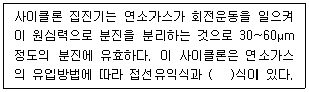
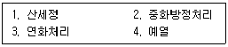
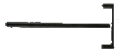
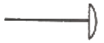
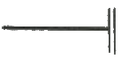
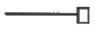
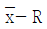

에너지관리기능장 (2012-07-22 기출문제)
1과목: 임의 구분
1. 증기 보일러의 용량 표시방법으로 사용되지 않는 것은?
- 환산증발량
- 전열면적
- 최고사용압력
- 보일러의 마력
(정답률: 62%)

2. 보일러의 자동제어에서 증기압력제어는 어떤 량을 조작하는가?
- 노내 압력량과 기압량
- 급수량과 연료공급량
- 수위량과 전열량
- 연료공급량과 연소용 공기량
(정답률: 77%)
3. 급수펌프의 구비조건에 대한 설명으로 틀린 것은?
- 고온, 고압에도 충분히 견디어야 한다.
- 부하변동에 대한 대응이 좋아야 한다.
- 고·저부하시에는 펌프가 정지하여야 한다.
- 작동이 확실하고 조작이 간편하여야 한다.
(정답률: 91%)
4. 다음 중 난방부하의 정의로 가장 옳은 것은?
- 난방을 위하여 열을 공급하는 보일러에 걸리는 부하를 말한다.
- 난방 장소에는 사람이 없고 공기 흐름이 없는 완벽한 공간에서의 열 공급량을 말한다.
- 난방을 하고자 하는 장소의 열 손실을 말한다.
- 난방 기구의 크기에 따른 열 발생 능력을 말한다.
(정답률: 68%)
5. 보일러의 그을음 취출장치인 슈트 블로워(soot blower)에 대한 내용으로 잘못된 것은?
- 슈트블로워의 설치목적은 전열면에 부착된 그을음을 제거하여 전열효율을 좋게 하기 위해서다.
- 종류에는 장발형, 정치회전형, 단발형 및 건타입 슈트블로워 등이 있다.
- 슈트블로워 분출(취출)시에는 통풍력을 크게 한다.
- 슈트블로워 분출 전에는 저온부식방지를 위해 취출기 내부에 드레인 배출을 삼가 한다.
(정답률: 83%)
6. 다음 내용의 ( )안에 들어갈 알맞은 용어는?

- 축류
- 원심
- 사류
- 와류
(정답률: 75%)
7. 기체연료의 특징으로 옳은 것은?
- 점화나 소화가 용이하다.
- 연소의 제어가 어렵고 곤란하다.
- 과잉공기가 많아야 만 완전연소 된다.
- 누출 시 폭발 위험성이 적다.
(정답률: 79%)
8. 보일러 설치검사 기준상 가스용 보일러의 운전성능 검사시에 배기가스 중 일산화탄소(CO)의 이산화탄소(CO2)에 대한 비는 얼마 이하 이어야 하는가?
- 0.002
- 0.004
- 0.0⑤
- 0.007
(정답률: 75%)
9. 복사난방에 대한 설명 중 맞는 것은?
- 복사난방이란 표면에서 복사열을 방출하는 장치를 이용하여 난방 하는 것을 말한다.
- 바닥에 코일을 매설하는 온돌방식은 복사난방이 아니고 대류난방이다.
- 스테인리스강으로 복사패널을 만드는 것은 복사열을 가장 적게 방출하기 때문이다.
- 복사패널의 표면온도가 150℃가 넘는 것은 복사난방이라고 하지 않고 온풍난방이라고 한다.
(정답률: 89%)
10. 인젝터 급수불능 원인에 대한 설명으로 틀린 것은?
- 급수의 온도가 22℃ 정도일 때
- 증기 압력이 2kgf/cm2 이하 일 때
- 흡입 관로에서 공기가 누입될 때
- 인젝터 자체가 과열되었을 때
(정답률: 73%)
11. 연소장치에 대한 설명으로 틀린 것은?
- 윈드박스는 공기흐름을 적절히 유지하며 동압을 정압상태로 바꾸어 착화나 화염을 안정시키는 장치이다.
- 콤버스터는 저온의 노에서도 연소를 안정시켜 분출흐름의 모양을 안정시킨 장치이다.
- 유류버너에서 고압기류식 버너는 연로자체의 압력에 의해 노즐에서 고속으로 분출시켜 미립화시키는 버너이다.
- 유류버너에세 비환류성 버너는 연소량이 감소하는 경우에는 와류실의 선회력이 감소하여 분무특성이 나빠지는 결점이 있다.
(정답률: 66%)
12. 태양열 난방설비의 구성요소 중 틀린 것은?
- 냉각기
- 집열기
- 축열기
- 열교환기
(정답률: 87%)
13. 보일러의 중심에서 최상층 방열기의 중심까지 높이가 20m 이고 송수온도의 비중량이 962kgf/m3, 환수온도의 비중량이 975 kgf/m3 일 때 자연 순환수두는 얼마인가?
- 225 mmAq
- 252 mmAq
- 260 mmAq
- 273 mmAq
(정답률: 47%)
14. 보일러의 통풍장치 방식에서 흡입통풍 방식에 관한 설명으로 맞는 것은?
- 노앞과 연돌 하부에 송풍기를 설치하여 노내압을 대기압 보다 약간 낮은 압력으로 유지시키는 방식이다.
- 연도에서 연소가스와 외부공기와의 밀도차에 의해서 생기는 압력차를 이용한 방식이다.
- 연도의 끝이나 연돌하부에 송풍기를 설치하여 연소가스를 빨아내는 방식이다.
- 노입구에 압입송풍기를 설치하여 연소용 공기를 밀어넣는 방식이다.
(정답률: 85%)
15. 증기난방의 환수관에서 냉각래그(cooling leg)는 몇 m 이상으로 설치하는 것이 가장 적절한가?
- 1.0
- 1.2
- 1.5
- 0.5
(정답률: 83%)
16. 온수난방 방열기의 방열량 3600 kcal/h, 입구온수온도 75℃, 출구온수온도 65℃로 했을 경우, 1분당 유입온수유량은 몇 kg 인가?
- 6
- 10
- 12
- 40
(정답률: 50%)
17. 보일러의 보수유지관리에서 압력계의 정비 시 주의사항으로 틀린 것은?
- 압력계 등은 양손으로 잡고 회전시켜 분리해서는 안 된다.
- 압력계와 미터콕크는 나사삽입 연결의 가스켓으로 적정한 것에 사용한다.
- 압력계는 적어도 1년에 한번은 기준압력계와 비교검사를 한다.
- 사이폰관에는 부착 전에 반드시 물이 없도록 한다.
(정답률: 76%)
18. 보일러 설치기술 규격에서 감압밸브의 설치에 대한 내용 중 잘못된 것은?
- 감압밸브 앞에 사용되는 레듀서(reducer)는 동심레듀서를 사용한다.
- 바이패스(bypass)관 및 바이패스밸브를 나란히 설치한다.
- 감압밸브 앞에는 기수부리기 또는 스팀트랩에 의해 응축수가 제거되어야 한다.
- 감압밸브에는 반드시 여과기를 설치한다.
(정답률: 75%)
19. 연료 및 연소장치에서 공기비(m)가 적을 때의 특징으로 틀린 것은?
- 불완전연소가 되기 쉽다.
- 미연소 가스에 의한 가스폭발과 매연이 발생한다.
- 연소실 온도가 저하된다.
- 미연소 가스에 의한 열손실이 증가한다.
(정답률: 71%)
20. 방열기에 대한 설명 중 맞는 것은?
- 방열기에서 표준방열량을 구하는 평균온도기준은 온수가 80℃이고 증기는 102℃이다.
- 주철제 방열기는 응축수가 가진 현열도 이용하므로 증기사용량이 감소한다.
- 방열기는 증기와 실내공기의 온도차에 의한 복사열에 의해서만 난방을 한다.
- 방열기의 표준방열량은 증기는 650 W/m2 이고 온수는 450 W/m2 이다.
(정답률: 74%)
2과목: 임의 구분
21. 연소가스의 여열을 이용하여 보일러의 효율을 향상시키는 장치가 아닌 것은?
- 통풍기
- 공기예열기
- 과열기
- 절탄기
(정답률: 67%)
22. 과압방지 안전장치에 대한 설명 중 올바른 것은?
- 안전밸브의 부착은 반드시 용접접합을 한다.
- 전열면적이 55m2이 증기보일러에는 1개 이상의 안전밸브를 설치한다.
- 안전밸브의 부착은 가능한 보일러 동체에 직접부착하지는 않는다.
- 최고사용압력이 0.1MPa이하의 보일러에 설치하는 안저밸브의 크기는 호칭지름 20mm이상으로 하여야 한다.
(정답률: 72%)
23. 어떤 보일러에서 측정한 배기가스 온도가 240℃, 배기가스량이 100Nm3/h 이고, 외기온도가 20℃, 실내온도가 25℃인 경우 배출되는 배기가스의 손실열량은 얼마인가? (단, 배기가스 및 공기의 비열은 각각 0.33, 0.31 kcal/kg℃ 이다.)
- 6045 kcal/h
- 6820 kcal/h
- 7095 kcal/h
- 7260 kcal/h
(정답률: 48%)
24. 산업안전보건에 관한 규칙에서 정한 보일러 부속품 중 압력방출장치(안전밸브)의 검사에 대한 내용으로 맞는 것은?
- 매년 1회이상 국가교정업무 전담기관에서 검사후 사용
- 매년 2회이상 국가교정업무 전담기관에서 검사후 사용
- 2년에 1회이상 국가교정업무 전담기관에서 검사후 사용
- 3년에 2회이상 국가교정업무 전담기관에서 검사후 사용
(정답률: 73%)
25. 물속에 포함되어 있는 불순물 중에서 용해고형물이 아닌 것은?
- 칼슘, 마그네슘의 탄산수소염류
- 칼슘, 마그네슘의 산염류
- 규산염
- 콜로이드의 규산염
(정답률: 65%)
26. 보일러 가스폭발을 방지하는 방법이 아닌 것은?
- 보일러 수위를 낮게 유지한다.
- 급격한 부하변동(연소량의 증감)은 피한다.
- 연료속의 수분이나 슬러지 등은 충분히 배출한다.
- 점화할 때는 미리 충분한 프리퍼지를 한다.
(정답률: 92%)
27. 0℃일 때 2.5m인 강철제 레일이 온도가 40℃가 되면 늘어가는 길이는 약 얼마인가? (단, 강철의 선팽창계수는 1.1×10-5/℃ 이다.)
- 0.011 cm
- 0.11 cm
- 1.1 cm
- 1.75 cm
(정답률: 63%)
28. 다음 물질 중 상온에서 열의 전도도가 가장 낮은 것은?
- 구리(동)
- 철
- 알루미늄
- 납
(정답률: 72%)
29. 과열증기의 설명으로 가장 적합한 것은?
- 습포화 증기의 압력을 높인 것
- 습포화 증기에 열을 가한 것
- 포화증기에 열을 가하여 포화온도 보다 온도를 높인 것
- 포화증기에 압을 가하여 증기압력을 높인 것
(정답률: 73%)
30. 보일러의 고온부식 방지대책 설명으로 틀린 것은?
- 연료 중의 바나듐 성분을 제거할 것
- 전열면의 온도가 높아지지 않도록 설계할 것
- 공기비를 많게 하여 바나듐의 산화를 촉진할 것
- 고온의 전열면에 내식재료를 사용할 것
(정답률: 86%)
31. 기온, 습도, 풍속의 3요소가 체감에 미치는 효과를 단일지표로 나타낸 온도는?
- 평균복사온도
- 유효온도
- 수정유효오도
- 신유효온도
(정답률: 72%)
32. 1마력(PS)으로 1시간 동안 한 일의 양을 열량을 환산하면 약 몇 kcal 인가?
- 75 kcal
- 102 kcal
- 632 kcal
- 860 kcal
(정답률: 64%)
33. 관로(管路)의 유체 마찰저항은 유체속도의 몇 제곱에 비례하는가?
- 4제곱
- 3제곱
- 2제곱
- 1제곱
(정답률: 74%)
34. 유체에 대한 베르누이 정리에서 유체가 가지는 에너지와 관계가 먼 것은?
- 압력에너지
- 속도에너지
- 위치에너지
- 질량에너지
(정답률: 74%)
35. 두 물체가 서로 접촉하고 있으면 열적 평형상태에 도달하는 것과 관계가 있는 법칙은?
- 열역학 제0법칙
- 열역학 제1법칙
- 열역학 제2법칙
- 열역학 제3법칙
(정답률: 71%)
36. 보일러 부식 원인을 설명한 것 중 틀린 것은?
- 수중에 함유된 산소에 의하여
- 수중에 함유된 암모니아에 의하여
- 수중에 함유된 탄산가스에 의하여
- 보일러수의 pH가 저하되어
(정답률: 76%)
37. 밀폐딘 용기 안에 비중이 0.8인 기름이 있고, 그 위에 압력이 0.5kgf/cm2인 고익가 있을 때 기름 표면으로부터 1m 깊이에 있는 한 점의 압력은 몇 kgf/cm2인가? (단, 물의 비중량은 1000 kgf/m3 이다.)
- 0.40
- 0.58
- 0.60
- 0.78
(정답률: 49%)
38. 청관제의 작용 중 해당되지 않는 것은?
- 관수의 탈산작용
- 기포발생 촉진
- 경도성분 연화
- 관수의 pH 조정
(정답률: 90%)
39. 다음 보기는 보일러의 산세정 공정의 일부를 나열한 것이다. 순서대로 바르게 된 것은?

- 1→4→2→3
- 1→2→4→3
- 4→1→3→2
- 4→3→1→2
(정답률: 70%)
40. 급수 중에 용존하고 있는 O2 등의 용존기체를 분리 제거 하는 진공탈기기의 감압장치로 이용되는 것은?
- 증류 펌프
- 급수 펌프
- 진공 펌프
- 노즐 펌프
(정답률: 88%)
3과목: 임의 구분
41. 열사용기자재관리규칙에서 정한 특정열사용기자재 및 설치·시공범위의 구분에서 금속요로에 해당 되지 않는 품목은?
- 용선로
- 금속균열로
- 터널가마
- 금속소둔로
(정답률: 76%)
42. 신·재생에너지 설비 성능검사기관을 신청하려는 자는 누구에게 신청서류를 제출 하는가?
- 지식경제부장관
- 기술표준원장
- 에너지과니공단 이사장
- 시·도지사
(정답률: 53%)
43. 열팽창이나 진동으로 관의 이동과 회전을 방지하기 위하여 지지점을 완전히 고정시키는 장치는?
- 인서트(insert)
- 앵커(anchor)
- 스토퍼(stopper)
- 브레이스(brace)
(정답률: 72%)
44. 지방자치단체의 저탄소 녹색성장과 관련된 주요정책 및 계획과 그 이행에 관한 사항을 심의하기 위한 지방녹색성장위원회의 구성, 운영 및 기능 등에 필요한 사항을 정하는 령은?
- 대통령령
- 국무총리령
- 지식경제부령
- 지방자치단체령
(정답률: 79%)
45. 캐스터를 내화물에 대한 설명 중 틀린 것은?
- 플라스틱 내화물보다 고온에 적합하며 규산소다로 만든다.
- 경화제로서 알루미나 시멘트를 10~20% 정도 배합한다.
- 시공 후 24시간 전후로 경화된다.
- 접합부 없이 노체(盧體)를 구축할 수 있다.
(정답률: 59%)
46. 보일러 열교환기용 관으로 가장 적합한 것은?
- SPP
- STHA
- STWW
- SPHT
(정답률: 65%)
47. 피복금속 아크용접에서 교류용접기와 비교한 직류용접기의 장점이 아닌 것은?
- 극성의 변화가 쉽다.
- 전격 위험이 적다.
- 역률이 양호하다.
- 자기쏠림 방지가 가능하다.
(정답률: 78%)
48. 저탄소 녹색성장 기본법에서 정의하는 온실가스에 해당되지 않는 것은?
- 이산화탄소(CO2)
- 메탄(CH4)
- 육불화황(SF6)
- 수소(H)
(정답률: 79%)
49. 밀폐식 팽창탱크에 설치하지 않아도 되는 것은?
- 안전밸브
- 수위계
- 압력계
- 온도계
(정답률: 55%)
50. 관말단의 표시 중 나사박음식 캡의 표시기호는?




(정답률: 81%)
51. 다음 중 기계식 트랩에 속하는 것은?
- 바이메탈식 트랩
- 디스크식 트랩
- 플로트식 트랩
- 벨로즈식 트랩
(정답률: 65%)
52. 연관용 공구 중 분기와 따내기 작업 시 주관에 구멍을 뚫는 공구는?
- 봄볼
- 드레서
- 벤드벤
- 턴핀
(정답률: 73%)
53. 동관의 이음 방법으로 적합하지 않은 것은?
- 용접 이음
- 플라스턴 이음
- 납땜 이음
- 플랜지 이음
(정답률: 79%)
54. 보통 피스페놀 A와 에피크롤히드린을 결합해서 얻어지며 내열성, 내수성이 크고 전기절연도 우수하여 도료접착제, 방식용으로 쓰이는 것은?
- 에폭시 수지
- 고농도 아연 도료
- 알루미늄 도료
- 산화철 도료
(정답률: 69%)
55. 축의 완성지름, 철사의 인장강도, 아스피린 순도와 같은 데이터를 관리하는 가장 대표적인 관리도는?
- c 관리도
- nP 관리도
- u 관리도

관리도
(정답률: 62%)
56. 로트의 크기가 시료의 크기에 비해 10배 이상 클 때, 시료의 크기와 합격판정개수를 일정하게 하고 로트의 크기를 증가시킬 경우 검사특성곡선의 모양 변화에 대한 설명으로 가장 적절한 것은?
- 무한대로 커진다.
- 별로 영향을 미치지 않는다.
- 샘플링 검사의 판별 능력이 매우 좋아진다.
- 검사특성곡선의 기울기 경사가 급해진다.
(정답률: 72%)
57. 작업시간 측정방법 중 직접측정법은?
- PTS법
- 경험견적법
- 표준자료법
- 스톱워치법
(정답률: 77%)
58. 준비작업시간 100분, 개당 정미작업시간 15분, 로트 크기 20일 때 1개당 소요작업시간은 얼마인가? (단, 여유시간은 없다고 가정한다.)
- 15분
- 20분
- 35분
- 45분
(정답률: 53%)
59. 소비자가 요구하는 품질로서 설계와 판매정책에 반영되는 품질을 의미하는 것은?
- 시장품질
- 설계품질
- 제조품질
- 규격품질
(정답률: 87%)
60. 다음 중 샘플링 검사보다 전수검사를 실시하는 것이 유리한 경우는?
- 검사항목이 많은 경유
- 파괴검사를 해야 하는 경우
- 품질특성치가 치명적이 결점을 포함하는 경우
- 다수 다량의 것으로 어느 정도 부적합품이 섞여도 괜찮을 경우
(정답률: 82%)